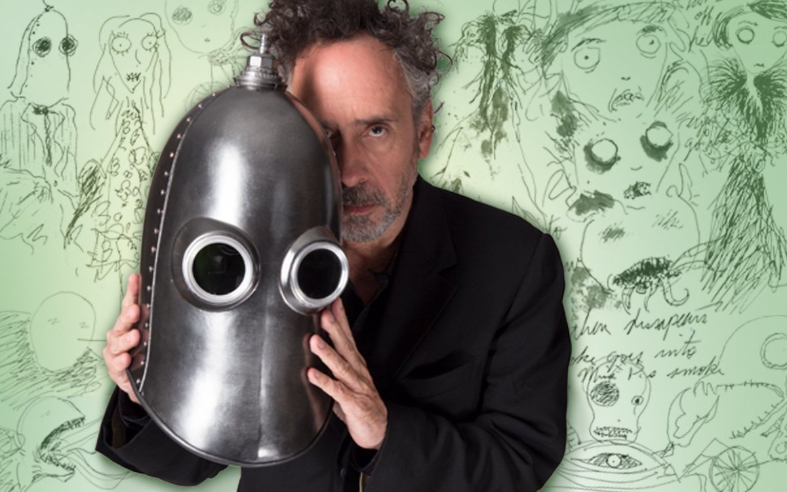

TIM BURTON

Timothy Walter Burton (born August 25, 1958) is an American filmmaker and artist. He is known for his gothic fantasy and horror films such as Beetlejuice (1988), Edward Scissorhands (1990), The Nightmare Before Christmas (1993), Ed Wood (1994), Sleepy Hollow (1999), Corpse Bride (2005), Sweeney Todd: The Demon Barber of Fleet Street (2007), Dark Shadows (2012) and, Wednesday (2022). Burton also directed the superhero films Batman (1989) and Batman Returns (1992), the sci-fi film Planet of the Apes (2001), the fantasy-drama Big Fish (2003), the musical adventure film Charlie and the Chocolate Factory (2005), and the fantasy films Alice in Wonderland (2010) and Miss Peregrine's Home for Peculiar Children (2016).